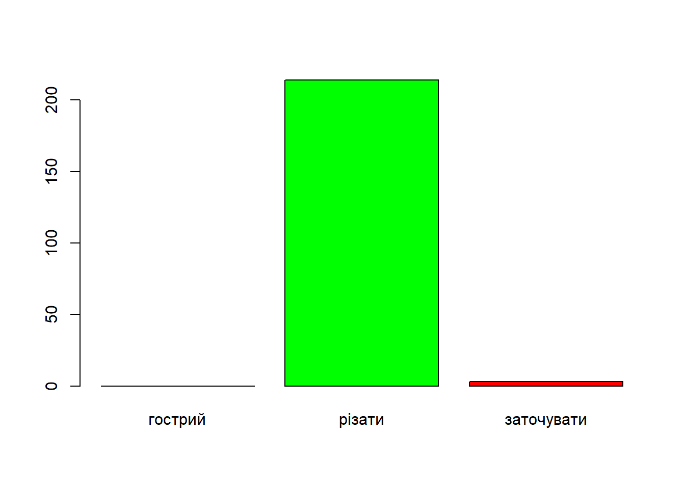

library(readxl)
students <- read_excel(
"Тест інтелекту (Відповіді).xlsx",
sheet = "Data View"
)Завдання 2
Тести складаються частіше за все з окремих завдань, тому якість теста залежить від того, як ці завдання працюють на спільну мету. Сьогодні ми познайомимося з першим кроком в аналізі завдань. Наскільки вони здатні розрізняти досліджуваних — і взагалі, і здібних від менш здібних. Наскільки завдання важкі та що впливає на важкість і як можна було б зробити їх більш важкими.
Отже, зробимо перший крок в нналізі дистракторів. З двох перспектив: 1) як добре вони виконують свою функцію відволікати увагу від правильної відповіді; 2) Якщо якийсь дистрактор обирає значна кількість людей, чи не є це правильною відповіддю — повнісю або частково? В принципі за дистрактором має лежати реально існуючий хибний процес мислення, тоді його вибір виконує важливу діагностичну функцію, адже ми можемо не просто сказати, що респондент обрав невірну відповідь, але й зрозуміти, чому — тоді можна організовувати втручання.
Відповіді учасників зберігаються у екселівському файлі у вигляді рядків, а не чисел, які вказують на номер обраної альтернативи. Ось так ці дані можуть бути імпортовані:
Тепер подивимося на
table(students$a01)
заточувати різати
3 214 Як можемо бачити, в цьому розподілі відсутній варіант «гострий», оскільки його ніхто не вибрав. Крім того.
library(dplyr)
Attaching package: 'dplyr'The following objects are masked from 'package:stats':
filter, lagThe following objects are masked from 'package:base':
intersect, setdiff, setequal, unionlibrary(sjmisc)Install package "strengejacke" from GitHub (`devtools::install_github("strengejacke/strengejacke")`) to load all sj-packages at once!students <- mutate(
students,
fa01 = factor(a01, levels = c("гострий", "різати", "заточувати")),
fa02 = factor(a02, levels = c("посмішка", "успіх", "щасливий"))
)
attr(students$fa02, "label") <- "«Стомлений» так відноситься до «Робота», як «Гордий» до:"
frq(students, fa01:fa02, sex)fa01 <categorical>
# total N=217 valid N=217 mean=2.01 sd=0.12
Value | N | Raw % | Valid % | Cum. %
-------------------------------------------
гострий | 0 | 0.00 | 0.00 | 0.00
різати | 214 | 98.62 | 98.62 | 98.62
заточувати | 3 | 1.38 | 1.38 | 100.00
<NA> | 0 | 0.00 | <NA> | <NA>
«Стомлений» так відноситься до «Робота», як «Гордий» до: (fa02) <categorical>
# total N=217 valid N=217 mean=1.98 sd=0.26
Value | N | Raw % | Valid % | Cum. %
-----------------------------------------
посмішка | 10 | 4.61 | 4.61 | 4.61
успіх | 202 | 93.09 | 93.09 | 97.70
щасливий | 5 | 2.30 | 2.30 | 100.00
<NA> | 0 | 0.00 | <NA> | <NA>
sex <character>
# total N=217 valid N=217 mean=1.22 sd=0.41
Value | N | Raw % | Valid % | Cum. %
-----------------------------------------
Жіноча | 170 | 78.34 | 78.34 | 78.34
Чоловіча | 47 | 21.66 | 21.66 | 100.00
<NA> | 0 | 0.00 | <NA> | <NA>Візуальне подання у вигляді стовпчикової діаграми
barplot(
height = table(students$fa01),
col = c("red", "green", "red")
)
Можна також виконати інше перетворення рядкової змінної: перекодувати її у кількісну і призначити мітки значень. Це дозволить користуватися цієї змінною як кількісною і якісною, перетворюючі при потребі на фактор за допомогою спеціальної функції:
students <- mutate(
students,
ra01 = recode(a01, "гострий" = 1, "різати" = 2, "заточувати" = 3)
)
attr(students$ra01, "labels") <- c(
"гострий" = 1, "різати" = 2, "заточувати" = 3
)
frq(students, ra01)ra01 <numeric>
# total N=217 valid N=217 mean=2.01 sd=0.12
Value | Label | N | Raw % | Valid % | Cum. %
---------------------------------------------------
1 | гострий | 0 | 0.00 | 0.00 | 0.00
2 | різати | 214 | 98.62 | 98.62 | 98.62
3 | заточувати | 3 | 1.38 | 1.38 | 100.00
<NA> | <NA> | 0 | 0.00 | <NA> | <NA>Як можете бачити, функція вміє використовувати мітки альтернатив. Ось функція, яка перетворить на фактор і їй не доведеться передавати мітки альтернатив.
tofactor <- function(x) {
labs <- attr(x, "labels")
factor(x, labels = names(labs), levels = labs)
}
u <- tofactor(students$ra01)
table(u)u
гострий різати заточувати
0 214 3